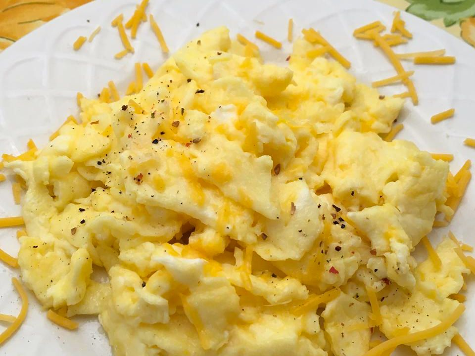

Scrambled Eggs

Go back to Homepage
Description
Follow the recipe below to find out!
ingredients
- 1/2 tbsp butter
- 4 large eggs
- 1/8 tsp kosher salt, or more to taste
Steps
- Melt the butter in a medium non-stick pan over medium-low heat.
- Crack eggs into a bowl, add a pinch of salt and whisk until well blended.
-
When the butter begins to bubble, pour in the eggs and immediately use
a silicone spatula to swirl in small circles around the pan, without
stopping, until the eggs look slightly thickened and very small curds begin
to form, about 30 seconds.
- Change from making circles to making long sweeps across the pan until you see larger, creamy curds; about 20 seconds.
-
When the eggs are softly set and slightly runny in places, remove the pan
from the heat and leave for a few seconds to finish cooking. Give a final
stir and serve immediately. Serve with an extra sprinkle of salt, a grind of
black pepper and a few fresh chopped herbs (if desired).